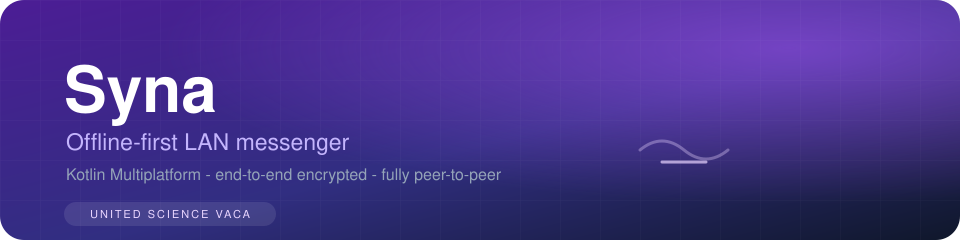

Syna
An offline-first LAN messenger with end-to-end encryption, group chat, an optional self-hosted server — and a built-in shield against device-level spyware.
01 Overview
Syna is an instant messenger built with Kotlin Multiplatform + Compose Multiplatform, running on Android, Windows and macOS (Linux server supported). It connects people on the same LAN — no central server and no internet connection required.
Devices discover each other automatically over UDP (broadcast + multicast, with a manual refresh for troubleshooting), then talk over TCP with messages encrypted end-to-end. Everything stays on your network; when friends are outside it, you can host your own small server and invite them in.
02 The problem it solves
Mainstream messengers tie you to an account, a company server, and an internet connection — your conversation history, contacts and metadata live on somebody else's machine. On a local network with no internet (a blackout, a school or office LAN, an event, a trip), most of them simply stop working.
And on the device itself, modern threats aren't just network sniffers: spyware, hooking frameworks and screen recorders can exfiltrate chats even when the network layer is secure.
Syna answers both:
- No account, no internet, no server — messages travel directly between devices on the LAN, encrypted with X25519 + AES-256-GCM.
- Host your own server for friends beyond the LAN (NAT traversal tutorials for frp / ngrok / Tailscale included) — your data on your machine.
- Defense against device compromise — see the highlights below.
03 Highlights
Messaging
The ⋄Mirtazapine Shield
Syna's signature security layer: a real-time monitor that assumes the device itself may be hostile. Detection spans root/Magisk/Xposed, Frida and hooking frameworks, emulators, ADB, CA-certificate changes, ARP spoofing, screen capture events and more. Countermeasures include a severity-graded full-screen lock, TOTP + biometric unlock, a self-destruct protocol for critical compromise, honeypot decoy messages, and a watchdog ring of threads that monitor each other.
- At rest: chat history AES-GCM encrypted with keys held in the hardware Keystore (TEE), session keys rotated on every unlock, memory cleared while locked.
- At run: NDK native anti-hook layer (syscall-direct I/O), APK signature verification against repackaging, dex hash self-verification.
- Fully public design: the threat model and detection matrix are documented in the repository — the protection holds even with source open.
Deployment
- Android APK, Windows & macOS desktop apps, and a SynaServer JAR for self-hosting (runs on a Raspberry Pi too).
- Full bilingual tutorials (EN / 中文) covering setup, LAN chat, private servers, NAT traversal, security model and troubleshooting.
04 Links & further reading
- Repository — source, issues and releases
- Releases — Android APK, desktop installers, server JAR
- Tutorial (EN) · Tutorial (中文)
- Shield design & detection matrix
- NUSV organization